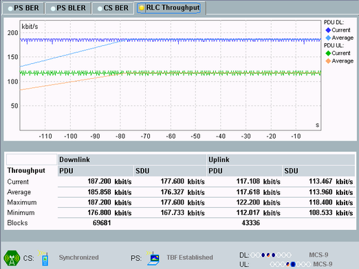

The tab shows the measurement results and the connection status.
The connection status and setup information displayed at the bottom is the same as in the GSM signaling main view, see "Connection Status" and "Connection Setup".
The most important settings of the GSM signaling application can be accessed via the "Signaling Parameter" softkey and the related hotkeys.
To switch to the signaling application, press the "GSM Signaling" softkey two times.
The "Config" hotkey opens either the configuration dialog of the measurement or the configuration dialog of the signaling application, depending on which softkey is active.

For a description of the results, see "Measurement Results".
Remote command:To display the hotkeys, press the "Display" softkey. The following hotkeys are then available at the bottom of the GUI: